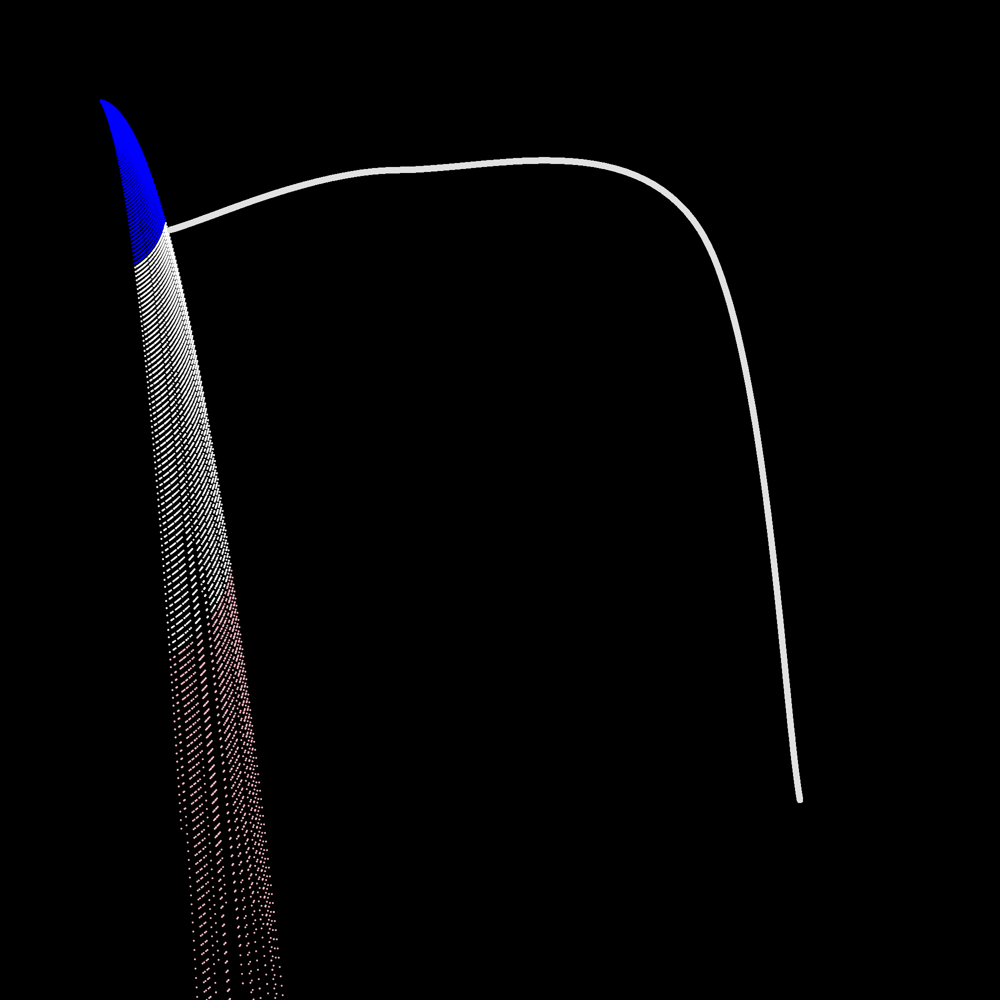

Sketch 17
What I made with p5 -- Day 17!

var ftn;
function setup() {
createCanvas(1000, 1000);
background(0);
var t = {
name: "Test",
colors: ["blue", "white", "pink"],
lifetime: 200, // how many?
angle: [10, 60],
gravity: 0.05,
x: 0.1, // 20% from left
y: 0.1,
}
ftn = new Fountain(null, t);
}
function draw() {
ftn.Draw();
ftn.Create();
ftn.Step(); // create movement for each frame
noFill();
stroke(225);
strokeWeight(6);
beginShape();
curveVertex(170, 230);
curveVertex(170, 230);
curveVertex(400, 170);
curveVertex(700, 230);
curveVertex(800, 800);
curveVertex(800, 800);
endShape();
}
BACK TO MENU